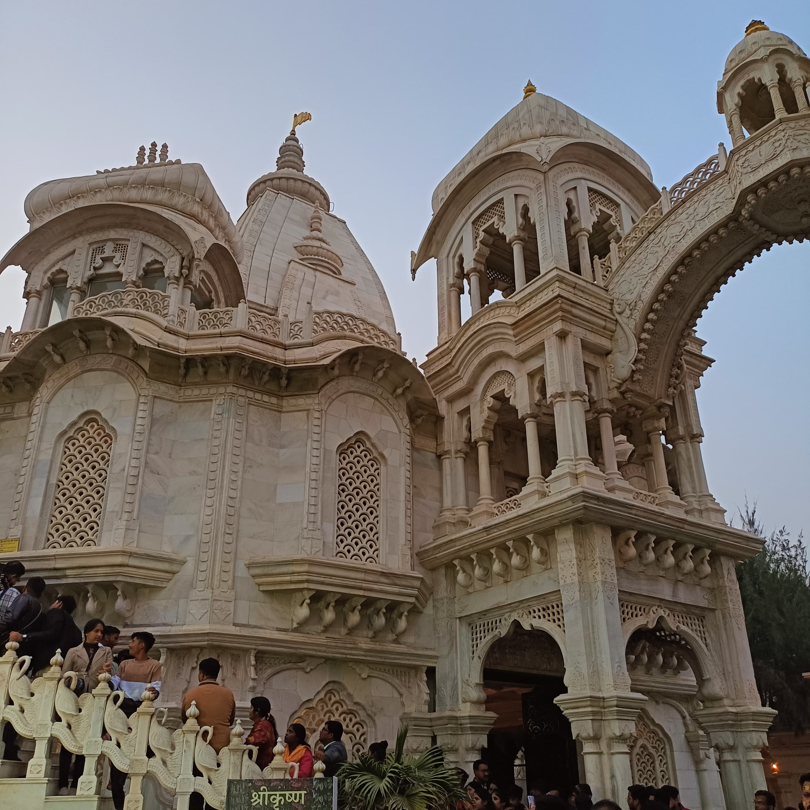

- 
Iskcon Temple
Sri Sri Krishna Balaram Mandir, another name for ISKCON Vrindavan, is one of the largest ISKCON temples worldwide. Located in the Mathura district of the Indian state of Uttar Pradesh, in the city of Vrindavan, is a Gaudiya Vaishnava temple.[1] Krishna and Balarama, two Hindu gods, are honored in this temple. Gauranga Nityananda and Radha Krishna are the other deities in the temple.
At the center altar are Krishna and Balarama, the temple's presiding deities. Radha Krishna as Sri Sri Radha Shyamsundar and the gopis Lalita and Vishakha are on the right altar. A. C. Bhaktivedanta Swami Prabhupada, the founder of ISKCON, and his mentor Bhaktisiddhanta Sarasvati are pictured on the left altar with Chaitanya Mahaprabhu and Nityananda.Standing at the complex's entrance, close to the temple, is Prabhupada's white marble samadhi mandir.
Past Events, The International Society for Krishna Consciousness was founded by A. C. Bhaktivedanta Swami Prabhupada, who also installed the deities (murtis) of Krishna-Balaram, Radha-Shyamasundar, the gopis Lalita Devi and Vishakha Devi, and Gaura-Nitai at ISKCON Vrindavan on Ram Navami (April 20, 1975).
- The main attraction at the ISKCON Temple in Vrindavan is the altar dedicated to the brothers Krishna and Balaram. The temple is also known as Sri Krishna Balram Mandir.
- The temple is one of the biggest and most magnificent temples in Vrindavan.
- The ISKCON Temple is a spiritual center that enables devotees to achieve inner happiness, satisfaction and higher consciousness. The ISKCON Temple is also a prime center for foreign tourists and is also a major tourist attraction in the city.